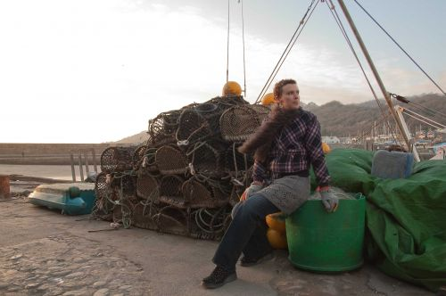

There was something indescribably vital about Kate Garrett. Her very existence was a challenge to embrace life. She would hold your gaze with an unswerving intensity, make you feel that, at that moment, you were the only other person in the world and dare you to meet her on her terms.

Born in Dorset in the final dimming days of 1971 she was a daughter of the English countryside, a product of its rhythms and cadences. Then, moving to Oxford in the early 90s, she put on her city skin and, like an urban fox, made it her home.

Having played in a duo as a teenager with Polly Harvey, her musical path took her through the alternative rock of The Mystics, the wayward acapella of Trio Hysteria and finally to The Kate Garrett Band where her own music finally took centre stage. On the way she made an indelible impression on those she gave her time to, especially through the Young Women’s Band Project in Oxford.

On her final EP, the first three tracks, Maid of the Wave, The Leaving and Diamonds are a reminder of the molten-glass quality of her voice. At once one can hear echoes of some of Britain’s greatest songwriters and yet it’s wholly Kate, every bit their equal, every inch herself. They were recorded in late 2008 at the home she shared with her husband and musical collaborator Barney Morse Brown in Cumnor. Kate recorded the last of the four, The Rest Will Follow, at her final concert, in Cumnor outside Oxford, on 21st February 2009 (other voices were added later for this EP). That clarity has gone. She is struggling to sing. ‘Let go. The rest must follow. ‘Cos I’m in heaven now.’ Kate died almost exactly three months later, on 22nd May, taken by breast cancer. And yet somehow she never left. Play this EP and she’s right back with us, challenging us to live without fear, without compromise. By doing so we make space for a little piece of her to live on in us all.
Kate Garrett's final EP "Maid of the Wave" has been sent for digital distribution on 27th December 2020.
Kate Garrett's music is available to buy/stream in all the usual places, including Spotify, Apple Music, YouTube Music, and Amazon Music.